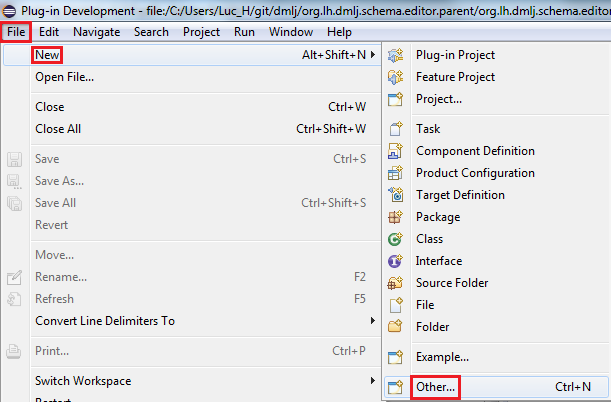
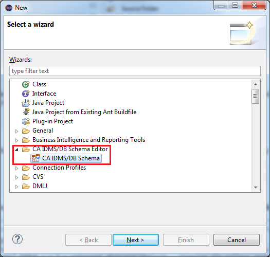
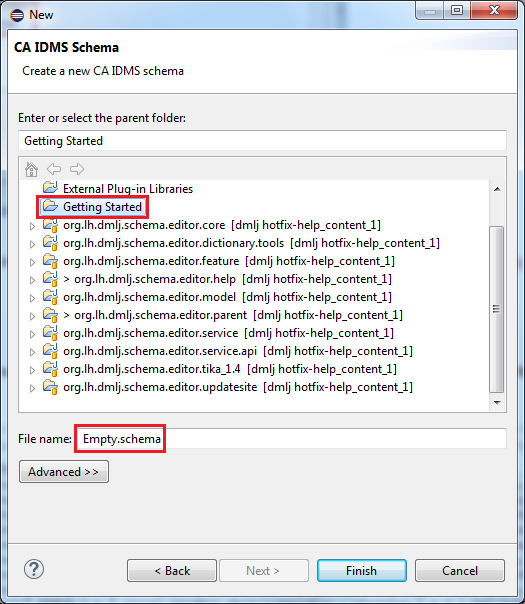
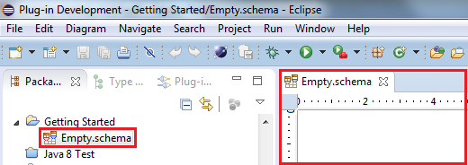

Creating a new Diagram
Please refer to the topic Importing a Diagram if you want to create a diagram for an
existing schema.
To create a schema diagram from scratch, use the File/New/Other... menu item :

Note that the number of items you see in your "New" menu can be different from the image below.
On the wizard selection window, select “CA IDMS/DB Schema” and press the Next button :

On the final wizard page, select a project of your choice and enter the name for your schema diagram
file, e.g. “Empty.schema” or "Empty.schemadsl". Make sure the file extension is “.schema” or ".schemadsl" (see
file extensions) :

When you press the Finish button, your empty diagram will be created and an editor will be opened
for it in the editor area :

Use the palette to add figures to your diagram and set their properties in the
Properties view.